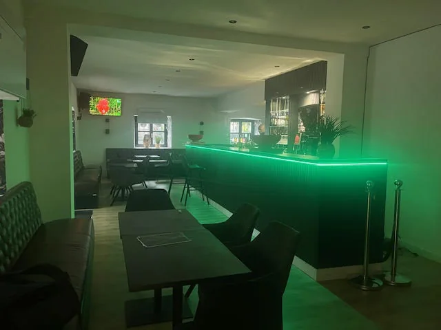
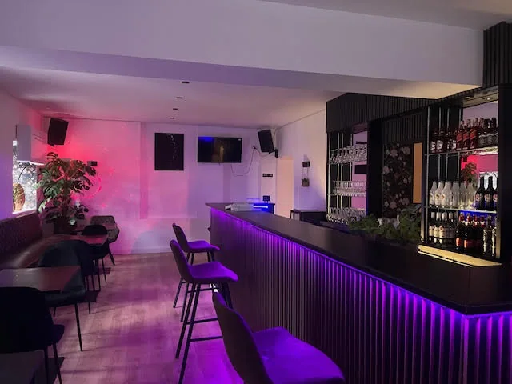
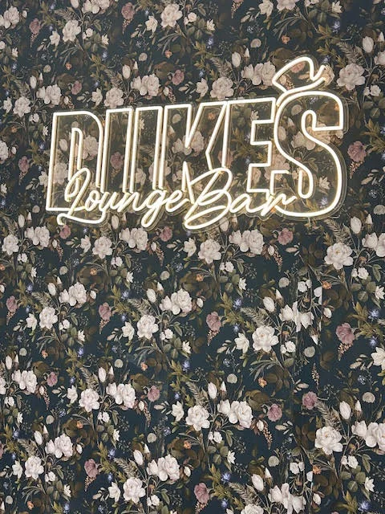
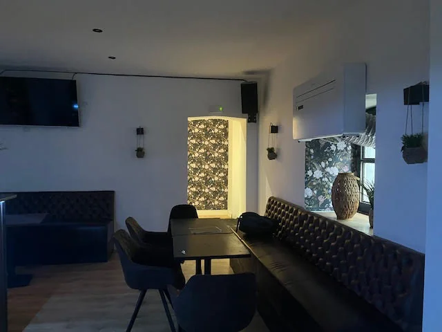
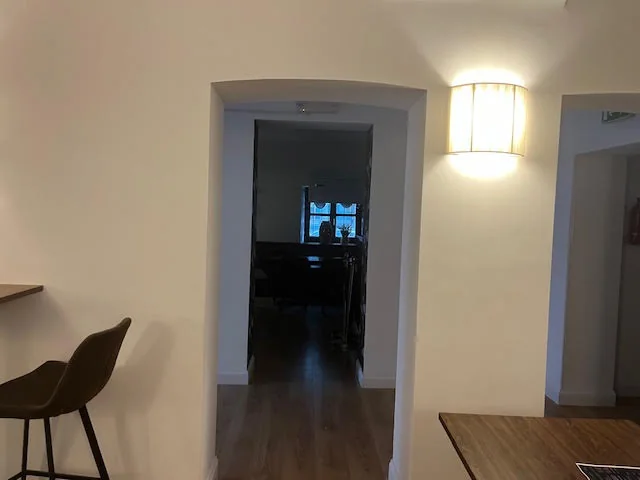
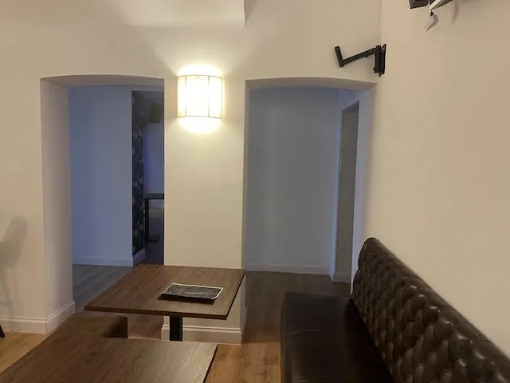
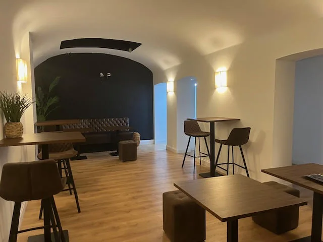
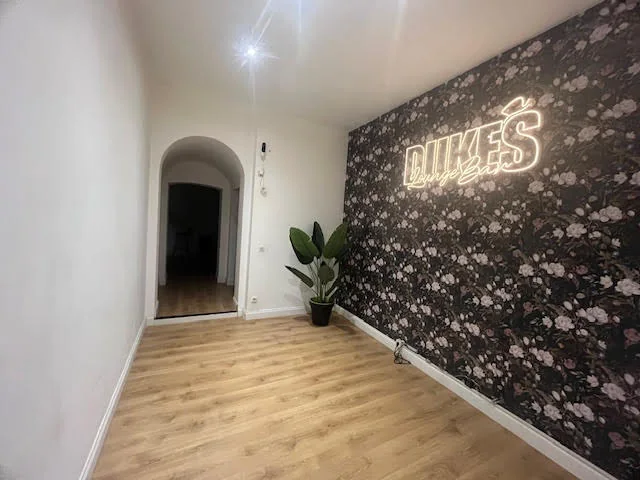
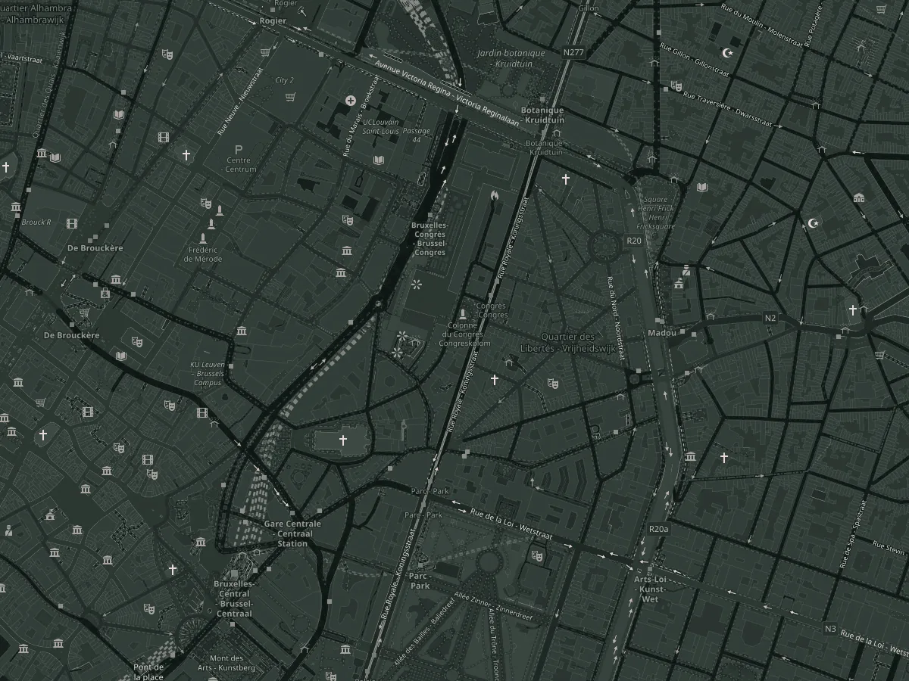

01Le mocktail maison « Duke's »
Il porte le nom du bar, et deux avis Google le citent.
« Service de qualité et mocktail maison délicieux »François C. · avis Google
Bruxelles · rue de Ligne
Banquettes en cuir capitonné, néon sur papier peint fleuri, mocktail maison « Duke's » et bonne musique. Ouvert du mardi au dimanche dès 10 h, et jusqu'à 6 h du matin le week-end.


Dukes Lounge BarLe lieu
Le Dukes a tout d'un salon : de longues banquettes en cuir, des appliques qui adoucissent les murs blancs, une voûte, et ce néon « Dukes Lounge Bar » posé sur un papier peint à grandes fleurs. On y vient pour un verre, une soirée en musique ou une table entre amis.




Ce qu'on y aime
Trois choses reviennent dans les avis Google du Dukes, dites avec leurs mots.

01Il porte le nom du bar, et deux avis Google le citent.
« Service de qualité et mocktail maison délicieux »François C. · avis Google

02Un endroit pour passer la soirée, tenu par des gérants passionnés qui connaissent leur clientèle.
« […] de l’ambiance et une bonne musique, c’est l’endroit idéal. »Anthony S. · avis Google
Les avis parlent d'un buffet et de brunchs le dimanche midi. Demandez la prochaine date au bar.
« Un bel accueil, un service de qualité et un buffet bien goûteux. »El B. · avis Google
Réserver
Un anniversaire, un verre entre amis, une soirée à plusieurs : choisissez le jour, l'heure et le nombre de personnes. Le Dukes vous confirme la table.
Avis
4,9 sur 5 : ce que les clients écrivent sur Google après une soirée au Dukes.
Horaires et accès
| lundi | fermé |
|---|---|
| mardi | 10 h – 2 h |
| mercredi | 10 h – 2 h |
| jeudi | 10 h – 5 h |
| vendredi | 10 h – 6 h |
| samedi | 10 h – 6 h |
| dimanche | 10 h – 23 h |
Les heures après minuit comptent pour la soirée de la veille.

Itinéraire © OpenStreetMapRue de Ligne, à deux pas de la Colonne du Congrès et de la cathédrale Saints-Michel-et-Gudule.
Appelez le 0479 61 09 71 ou écrivez à dukesloungebar@gmail.com.